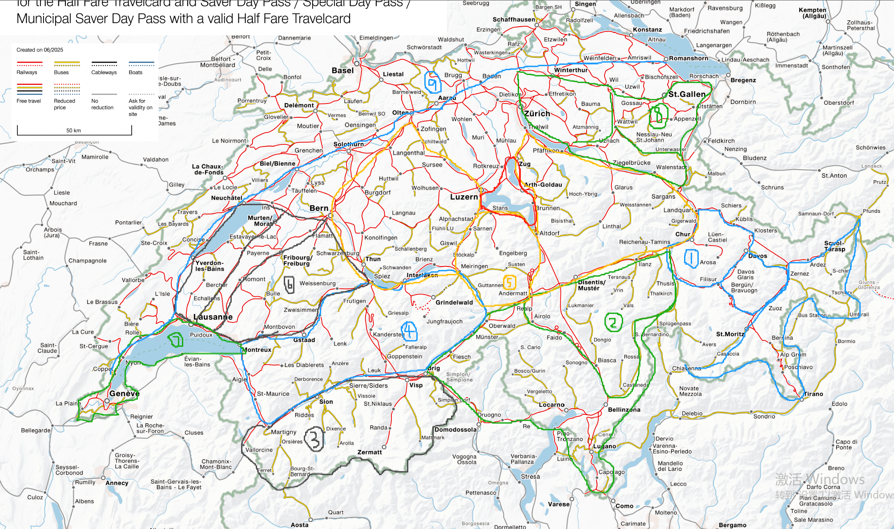

阿尔卑斯与勇士

关于本书
当一些经历把你带到效用版图(关于幸福的状态)的局部最高点时，你会得到一种世界上最幸福的人的身份认同，在这种处境下，你就被赋予了一种与世界对抗的勇气，能够平和地接收任何其他的存在。我暂时将其称作旅行的真谛！2025/08/14.
探索地图，到处走走看看，是我喜欢的事。这本书记录了我在瑞士探索阿尔卑斯山的旅程。标题"阿尔卑斯与勇士"源自小时候玩过的游戏"地下城与勇士"，设想自己成为阿尔卑斯的热血冒险家，是一种有趣的生活态度。
分区概览
在阿尔卑斯山占三分之二国土面积的瑞士，依着山川河流发展的公路和铁路网成了剖析其"技经肯綮"的绝佳工具。为了方便探索和记述，我依照天马行空的想象把地图画成几个区域：

九大区域：
- 区1: 库尔小猫 - Chur区域，包括双环结构和恩加丁峡谷
- 区2: 提契诺大小牛头 - 提契诺州全域及格劳宾登州西部
- 区3: 瓦莱六叉 - 罗讷河以南的瓦莱州高山区
- 区4: 阿尔卑斯树人面具 - 伯尔尼阿尔卑斯山段
- 区5: 卢塞恩皇冠米老鼠 - 瑞士中部，卢塞恩湖区
- 区6: 弗里堡柜子 - 弗里堡州农业平原区
- 区7: 日内瓦海豚 - 日内瓦湖沿岸
- 区8: 圣加仑变形金刚 - 圣加仑州及阿彭策尔地区
- 区9: 北方市镇 - Aare河以北及莱茵河流域
各卷内容
第一卷: Chur区域 (王者级)
形态特征： 像一只在板凳上打坐的小猫背影
主要组成：
- Chur环：Reichenau/Tamins - Thusis - Filisur - Davos - Klosters - Landquart
- Davos环：Filisur - Bever - Zernez - Sagliains - Klosters
- Engadin (1-2-3)：恩加丁峡谷三段
- Poschiavo：南下部分
- Surses-Julier：3号公路
- Arosa：弯曲线
- Val Müstair：东部山谷
精华景点：
- 西尔斯湖(Silsersee)的落叶松秋景
- Piz Bernina雪山和Morteratsch冰川
- 雷蒂亚铁路世界文化遗产
- 恩加丁村庄(Zuoz, S-Chanf)
- Lej Lagrev纯净冰川湖
- Jöriseen高山湖
第二卷: 大牛头小牛头 (勇士级)
形态特征： 三段河谷形成牛头形状
主要组成：
- 瓦莱连接：戈姆斯河谷和Val Bedretto
- 洛迦诺四山谷：Centovalli、Onsernone、Maggia、Verzasca
- 小牛头：提契诺河、Moesa河、后莱茵河围成的区域
- 南部三湖：马焦雷湖、卢加诺湖、科莫湖
精华景点：
- Morcote和Ascona湖滨小镇
- Griespass-Griessee水库冰川湖
- Foroglio石屋瀑布
- 冰川列车Oberalppass精华段
- 萨芬河谷和莱茵河大峡谷
- Flims的Crestasee和Caumasee
第三卷: 罗讷河以南 (王者级)
形态特征： 瓦莱六叉结构
主要组成：
- 一叉(Martigny)：St-Bernard山口、Mauvoisin湖
- 二叉(Sion)：Cleuson、Lac des dix、Arolla
- 三叉(Sierre)：Val d'Anniviers
- 四叉(Turtmann)：Turtmannsee
- 五叉(Visp)：采尔玛特、Saas-Fee
- 六叉(Brig)：Simplonpass
精华景点：
- Orsières项链：东望奔宁山脉，西望勃朗峰
- Mauvoisin湖、Cleuson湖、Moiry湖
- Arolla秋景和Lac Bleu
- 采尔玛特马特洪峰及周边
- Turtmann蒂芙尼蓝湖泊
第四卷: 阿尔卑斯山伯尔尼段 (王者级)
形态特征： 树人面具，因特拉肯是额头
主要组成：
- 西块：黄金列车沿线、西门和萨嫩谷地
- 东块：因特拉肯蝴蝶块、康考迪亚冰川
精华景点：
- Kandersteg厄希嫩湖
- Adelboden峡谷和沟壑
- Lenk瀑布群
- Leukerbad温泉
- 因特拉肯两湖：图恩湖和布里恩茨湖
- Grindelwald梦幻山坡
- Lauterbrunnen瀑布之谷
- 少女峰三山(艾格、僧侣、少女)
- 阿莱奇冰川
第五卷: 大耳朵米老鼠 (勇士级 - 王者级)
形态特征： 带皇冠的米老鼠
主要组成：
- 皇冠：卢塞恩湖和楚格湖
- 左耳朵：伯尔尼圈、Emmental
- 右耳朵：格拉鲁斯圈
- 头部：恩格堡五角星和苏斯滕方块
精华景点：
- 苏斯滕方块山口环线
- Göschenen和Göscheneralpsee
- Furkapass盘山公路和罗讷河源头
- Grimselpass格里姆瑟湖
- 布里恩茨山脊线
- Engelberg的Melchsee四湖
- 17号公路：Klausenpass、Ortstock
- 格拉鲁斯山谷和利马特河源头
- Stoos-Muotathal山脊
第六卷: 弗里堡柜子 (冒险级)
形态特征： 三门柜子结构
主要组成：
- 东门板：萨讷河(Sarine)流域
- 中门板：La Broye河流域
- 西门板：纳沙泰尔湖沿线
特色：
- 宽阔的农业用地
- 细密的河道网络
- 格吕耶尔奶酪和巧克力工厂
- Siviriez广袤原野
第七卷: 圣加仑区域 (勇士级)
形态特征： 变形金刚
主要组成：
- 左脸：苏黎世湖北岸
- 右脸：阿彭策尔森蒂斯
- 鼻梁：Wil-Wattwil
- 瓦伦湖区
精华景点：
- Amden瓦伦湖北岸春景
- Wil-Wattwil沿河繁花绿地
- Saxer Lücke岩壁山口
- Santis区域和Seealpsee
- Quarten俯瞰瓦伦湖
第八卷: Léman 湖区 (冒险级)
形态特征： 海豚形状
主要组成：
- 东线：洛桑、拉沃、蒙特勒
- 西线：莫尔日、罗勒、日内瓦
- 南岸：托农、依云(法国)
第九卷: 北方市镇 (冒险级)
形态特征： Aare河以北平原区
主要组成：
- 西侧：汝拉山
- 莱茵河两支流：Aare河和Thur河流域
- 阿尔高州和图尔高州
精华景点：
- 莱茵瀑布
- 弗里克樱花
版本信息： This version: Sept, 2025
探索进度： 竣崴西游，遍九卷，历四季